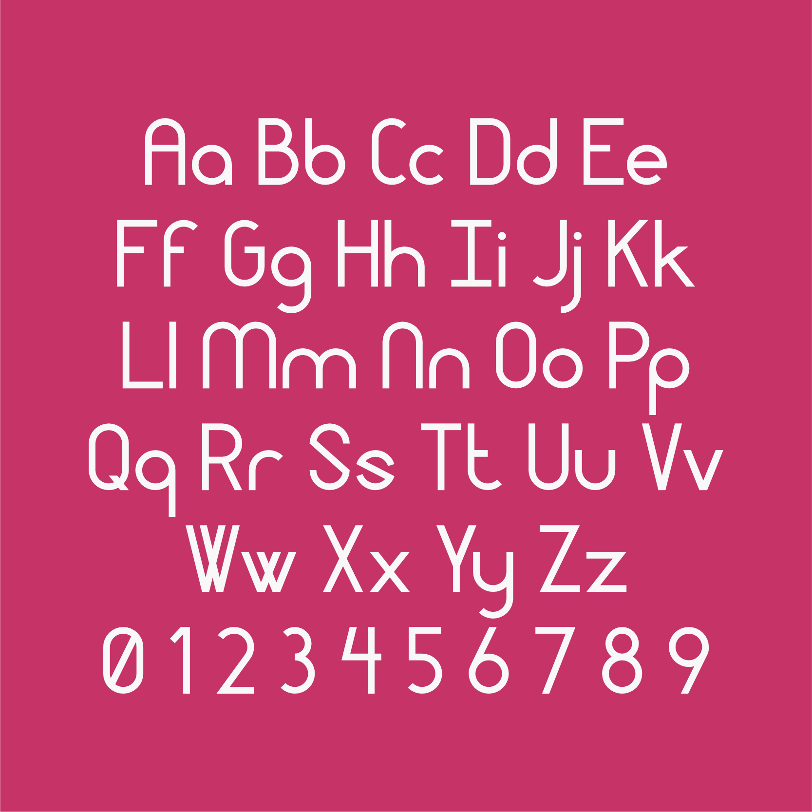
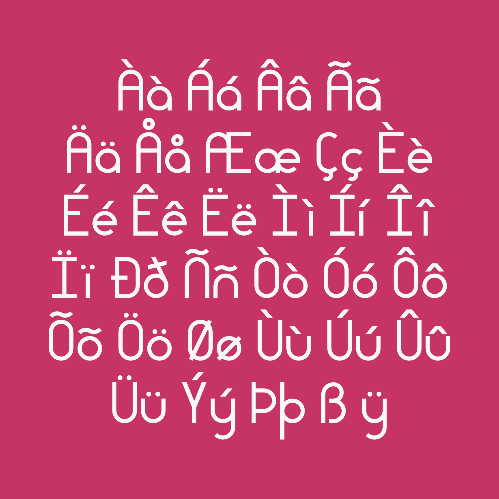
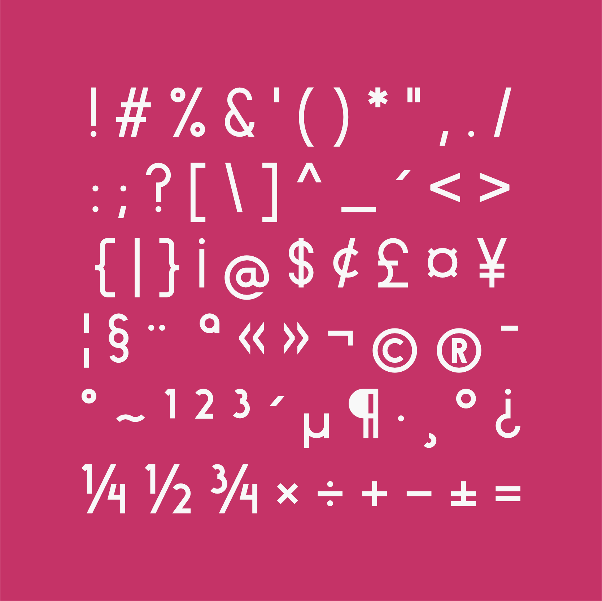
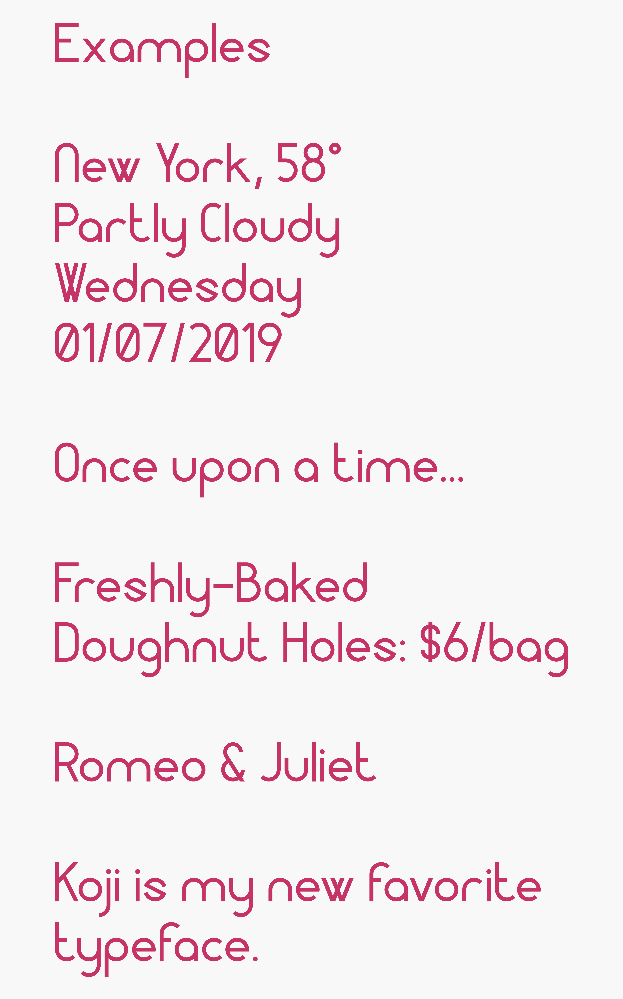
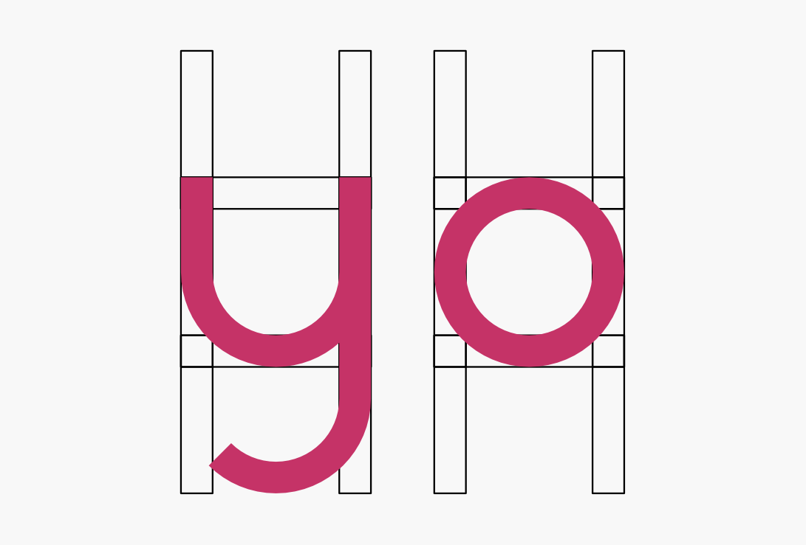

Koji Typeface
A crack at transforming collegiate marginalia into an actual font.
Try Out Koji Exploration and Drafting Notes
I’ve been sketching out font ideas in the margins of college notebooks for years, so I thought it might be time to formalize one of them. The result is Koji, a typeface based off of a simple jig I would draw in my workbooks during class.
The main idea of Koji was to base all of the characters off of a simple template. But, as I began formally defining the font, it of course came down to some aesthetic choices. Creating this font was an incredible experience and I hope to improve it more and more, adding new characters to support more languages and tightening up each letter to improve usability.
Included Unicode Blocks
Why Koji?
Naming a font is arguably as hard as creating one. I could say it was chosen because Koji fungal blooms are sort of round like this font. Or I could say it’s a principal ingredient in fermenting soy sauce, a condiment that is simple yet complex, just like this font. But the truth is far less poetic: it came from an online word finder. I wanted a name that used an uppercase “K” and a lowercase “j” because those are two of my favorite letters in this typeface. So I searched for a word that fit the bill and came across “Koji” and it just grew on me. It’s easy to say, it has a cool but as you now know somewhat tacked-on backstory, and it looks good when written in the font, which is always a plus. Overall, a simple and catchy name for what I hope is your new favorite font.
{kind=link}
Try it out!
If you try out the Koji typeface, consider throwing a digital coffee my way. Much appreciated.
Hope you enjoy the Koji typeface.
Version Log
Jan 2019
- Initial release (1.000)
- Basic Latin (U+0020-U+007E)
- Latin-1 Supplement (U+00A0-U+00FF)
Pictures




